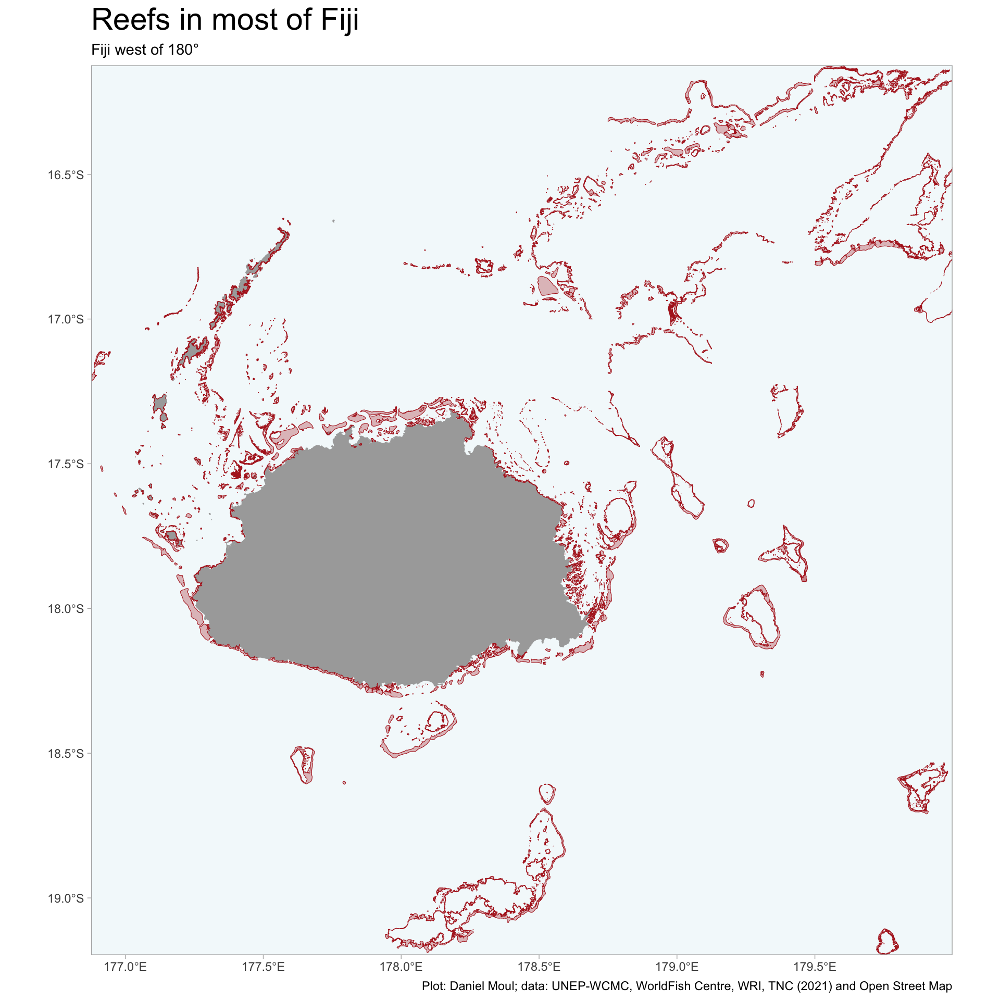
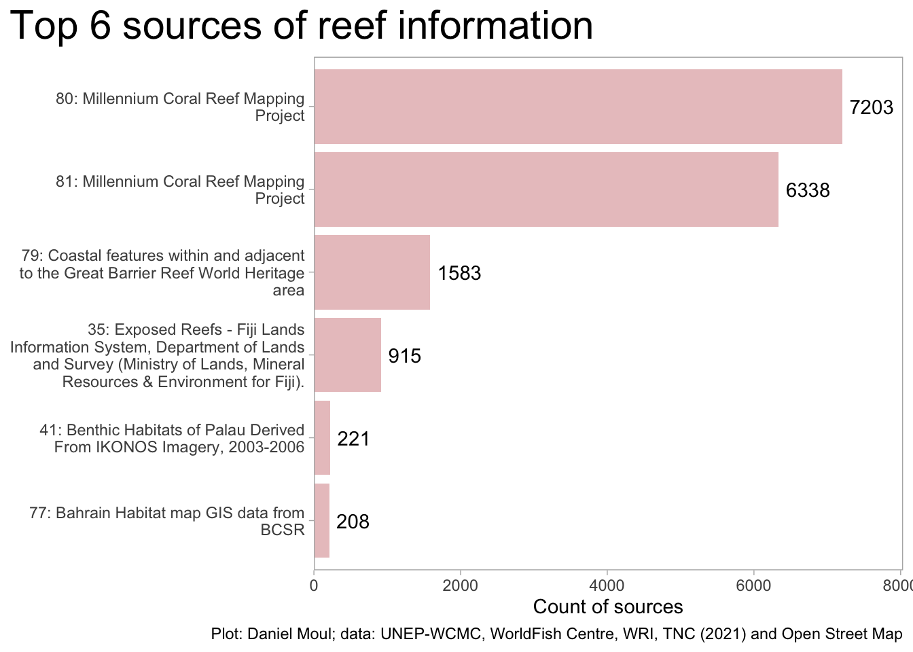
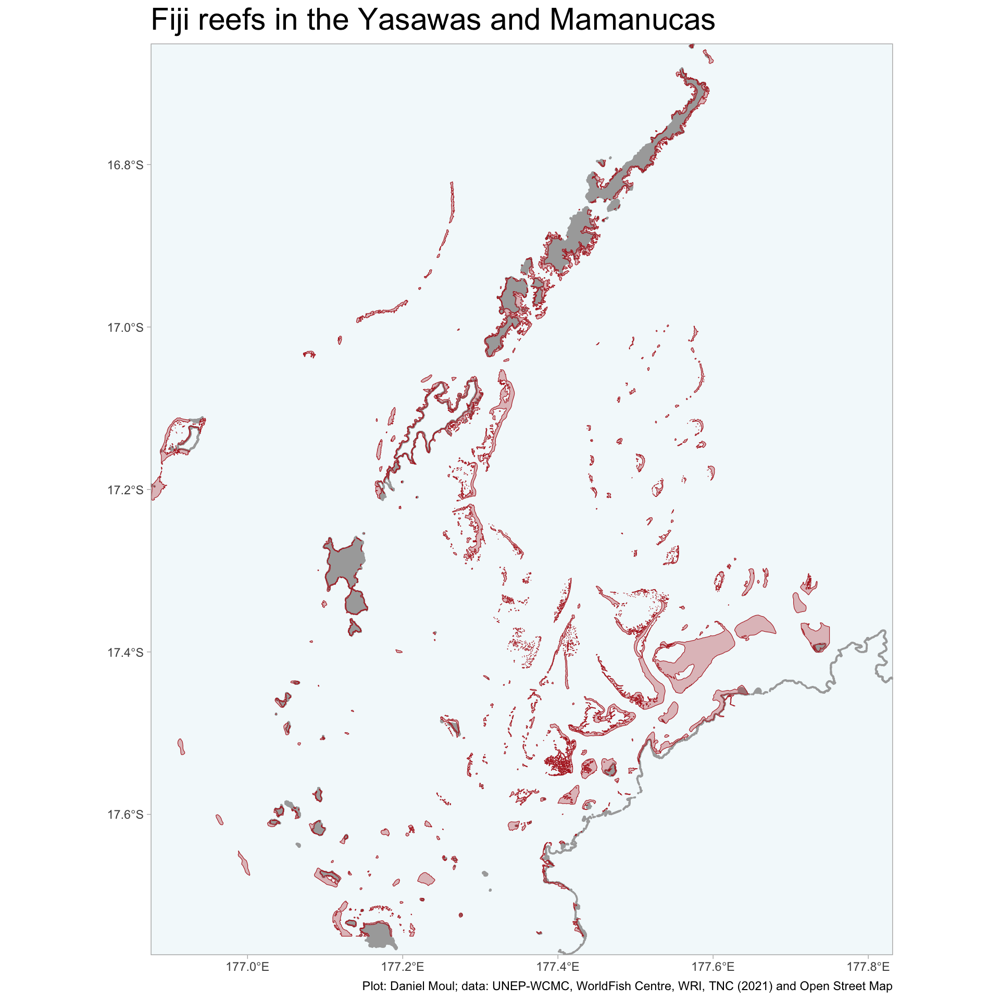
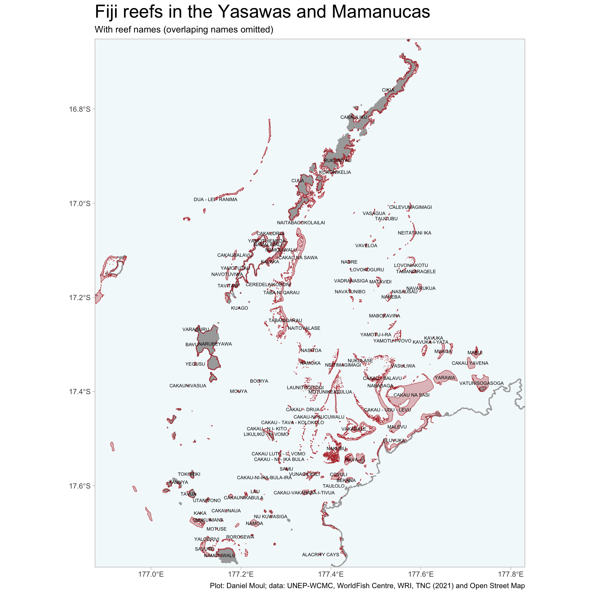
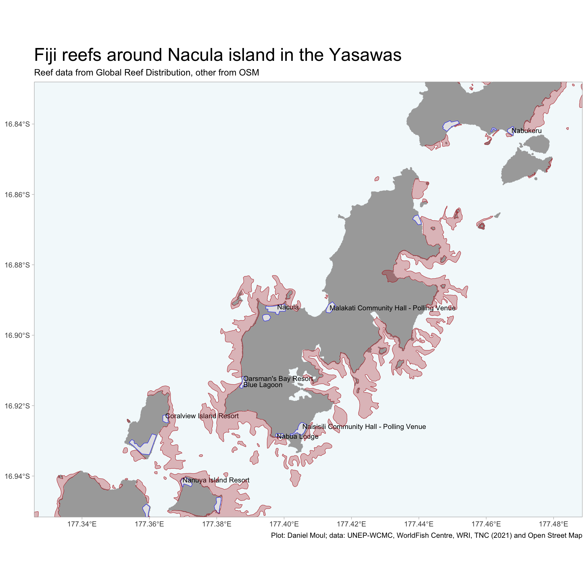

library(here)library(tidyverse)library(janitor)library(scales)library(glue)library(sf)library(osmdata)library(patchwork)library(gt)theme_set(theme_light() +theme(panel.grid.major =element_blank(),panel.grid.minor =element_blank(),plot.title =element_text(size =rel(2))))options(scipen =5)sf_use_s2(FALSE) # following https://github.com/r-spatial/sf/issues/2366my_caption <-"Plot: Daniel Moul; data: UNEP-WCMC, WorldFish Centre, WRI, TNC (2021) and Open Street Map"
Fiji has extensive reefs: mostly fringing reefs with some barrier reefs and coral mounds, and still fewer atolls, the latter mostly in the Lau group in the east of the country’s waters.1
dta_for_plot <- d_raw |>st_crop(my_bbox_fj)plot_alpha <-0.3dta_for_plot |>ggplot() +geom_sf(data = fj_islands$osm_multipolygons,color ="brown", fill ="brown", linewidth =0.001, alpha = plot_alpha) +geom_sf(data = fj_islands$osm_polygons,color ="brown", fill ="brown", size =0.001, alpha = plot_alpha) +geom_sf(data = fj_coastline$osm_polygons,color ="brown", fill =NA, linewidth =0.001, alpha = plot_alpha) +geom_sf(fill ="goldenrod", color ="goldenrod", alpha =0.3) +coord_sf(xlim = my_bbox_fj[c(1, 3)], # min & max of x valuesylim = my_bbox_fj[c(2, 4)]) +scale_x_continuous(expand =expansion(mult =c(0,0))) +scale_y_continuous(expand =expansion(mult =c(0,0))) +theme(panel.background =element_rect(fill =alpha("lightblue", 0.15))) +# "#0000CD33")) +labs(title ="Reefs in most of Fiji",subtitle ="Fiji west of 180°",x =NULL,y =NULL,caption = my_caption )

Figure 2.1: Fiji reefs
I make use of data from Global distribution of warm-water coral reefs, compiled from multiple sources including the Millennium Coral Reef Mapping Project, a recently published effort to curate a good data set of warm water coral reefs world-wide:
This dataset was compiled from a number of sources by UNEP World Conservation Monitoring Centre (UNEP-WCMC) and the WorldFish Centre, in collaboration with WRI (World Resources Institute) and TNC (The Nature Conservancy).2
Show the code
dta_for_plot <- d_raw |>st_drop_geometry() |>count(METADATA_I) |>mutate(METADATA_I =factor(METADATA_I),METADATA_I =fct_lump_min(METADATA_I, min =200, w = n),SOURCE_ID =as.character(METADATA_I) ) |>filter(METADATA_I !="Other") |>left_join(d_raw_metadata |>select(SOURCE_ID, DC_TITLE) |>mutate(SOURCE_ID =as.character(SOURCE_ID)),by ="SOURCE_ID") |>mutate(source_desc =str_wrap(glue("{SOURCE_ID}: {DC_TITLE}"), 40),source_desc =fct_reorder(source_desc, n))n_sources <-nrow(dta_for_plot)dta_for_plot |>ggplot() +geom_col(aes(x = n, y = source_desc),fill ="firebrick", alpha =0.3) +geom_text(aes(x = n +100, y = source_desc, label = n),hjust =0) +scale_x_continuous(expand =expansion(mult =c(0, 0.1))) +theme(plot.title.position ="plot"# "#0000CD33")) + ) +labs(title =glue("Top {n_sources} sources of reef information"),x ="Count of sources",y =NULL,caption = my_caption )

Figure 2.2: Top sources of global reef data
The “Global distribution of warm-water coral reefs” dataset draws most of it’s data from the Millennium Coral Reef Mapping Project. The third-most common source was unique to Fiji: Exposed Reefs - Fiji Lands Information System, Department of Lands and Survey (Ministry of Lands, Mineral Resources & Environment for Fiji).3
Data obtain from ReefBase and Data downloaded from NASA Archive 01/01/09
Millennium Coral Reef Mapping Project validated maps provided by the Institute for Marine Remote Sensing, University of South Florida (IMaRS/USF) and Institut de Recherche pour le DÚveloppement (IRD, Centre de NoumÚa), with support from NASA.
2005
81
6338
Millennium Coral Reef Mapping Project
Data downloaded from NASA Archive 01/01/09
Millennium Coral Reef Mapping Project unvalidated maps provided by the Institute for Marine Remote Sensing, University of South Florida (IMaRS/USF), with support from NASA. Unvalidated maps were further interpreted by UNEP-WCMC. Institut de Recherche p
2002
79
1583
Coastal features within and adjacent to the Great Barrier Reef World Heritage area
NA
Great Barrier Reef Marine Park Authority (2007) Coastal features within and adjacent to the Great Barrier Reef World Heritage area
2007
35
915
Exposed Reefs - Fiji Lands Information System, Department of Lands and Survey (Ministry of Lands, Mineral Resources & Environment for Fiji).
Data provided by WRI
Wildlife Conservation Society, Fiji (2009) Fiji Lands Information System, Department of Lands and Survey (Ministry of Lands, Mineral Resources & Environment for Fiji)
0
41
221
Benthic Habitats of Palau Derived From IKONOS Imagery, 2003-2006
NA
Department of Commerce (DOC), National Oceanic and Atmospheric Administration (NOAA), National Ocean Service (NOS), National Centers for Coastal Ocean Science (NCCOS), Center for Coastal Monitoring and Assessment (CCMA), Biogeography Program (2004). Bent
2007
77
208
Bahrain Habitat map GIS data from BCSR
NA
Bahrain Center for Studies and Research (1998). Bahrain Habitat Map.
1998
Zooming into the area between the Yasawas and northwestern Viti Levu, one can see fringing reefs, barrier reefs, and coral mounds.
Show the code
dta_for_plot <- d_raw |>st_crop(my_bbox_fj_yasawas)dta_for_plot |>ggplot() +geom_sf(data = fj_coastline_yasawas$osm_points,color ="darkgrey",size =0.001) +geom_sf(data = fj_coastline_yasawas$osm_polygons,color ="darkgrey", fill ="darkgrey",size =0.001) +geom_sf(data = fj_islands_yasawas$osm_polygons,color ="darkgrey", fill ="darkgrey",size =0.001) +geom_sf(fill ="firebrick", color ="firebrick", alpha =0.3) +scale_x_continuous(expand =expansion(mult =c(0,0))) +scale_y_continuous(expand =expansion(mult =c(0,0))) +theme(panel.background =element_rect(fill =alpha("lightblue", 0.15))) +# "#0000CD33")) +labs(title ="Fiji reefs in the Yasawas and Mamanucas",x =NULL,y =NULL,caption = my_caption )

Figure 2.3: Fiji reefs in the Yasawas and Mamanucas
Many reefs are named and considered traditionally associated with specific land-owning family groups (mataqali). In Fiji all land below high tide and all ocean area are considered publicly accessible.
Show the code
dta_for_plot |>ggplot() +geom_sf(data = fj_coastline_yasawas$osm_points,color ="darkgrey",size =0.001) +geom_sf(data = fj_coastline_yasawas$osm_polygons,color ="darkgrey", fill ="darkgrey",size =0.001) +geom_sf(data = fj_islands_yasawas$osm_polygons,color ="darkgrey", fill ="darkgrey",size =0.001) +geom_sf(fill ="firebrick", color ="firebrick", alpha =0.3) +geom_sf_text(aes(label =if_else(NAME !="Not Reported", NAME,NA)), size =2, color ="black",check_overlap =TRUE,na.rm =TRUE) +scale_x_continuous(expand =expansion(mult =c(0,0))) +scale_y_continuous(expand =expansion(mult =c(0,0))) +theme(panel.background =element_rect(fill =alpha("lightblue", 0.15))) +# "#0000CD33")) +labs(title ="Fiji reefs in the Yasawas and Mamanucas",subtitle ="With reef names (overlaping names omitted)",x =NULL,y =NULL,caption = my_caption )

Figure 2.4: Fiji reefs in the Yasawas and Mamanucas with reef names
Zooming in still further, Nacula is the island in the Yasawas where the resort I’m visiting is located.
Show the code
# NW: -16.828005, 177.313155# SE: -16.951690, 177.488593xmin =177.313155ymin =-16.828005xmax =177.488593ymax =-16.951690my_bbox_fj_nacula <-c(xmin = xmin, ymin = ymin, xmax = xmax, ymax = ymax)d_nacula_places <- my_bbox_fj_nacula |>opq()%>%add_osm_features(features =list("place"="village","leisure"="resort","tourism"="hotel","office"="government","landuse"="residential" ) ) %>%osmdata_sf()dta_for_plot |>st_crop(my_bbox_fj_nacula) |>ggplot() +geom_sf(data = fj_coastline_yasawas$osm_points |>st_crop(my_bbox_fj_nacula),color ="darkgrey",size =0.001) +geom_sf(data = fj_coastline_yasawas$osm_polygons |>st_crop(my_bbox_fj_nacula),color ="darkgrey", fill ="darkgrey",size =0.001) +geom_sf(data = fj_islands_yasawas$osm_polygons |>st_crop(my_bbox_fj_nacula),color ="darkgrey", fill ="darkgrey",size =0.001) +geom_sf(data = d_nacula_places$osm_polygons |>st_crop(my_bbox_fj_nacula),color ="blue", shape =15,size =2) +geom_sf_text(data = d_nacula_places$osm_points |>st_crop(my_bbox_fj_nacula),aes(label = name),color ="black", hjust =0,size =3) +geom_sf(fill ="firebrick", color ="firebrick", alpha =0.3) +scale_x_continuous(expand =expansion(mult =c(0,0))) +scale_y_continuous(expand =expansion(mult =c(0,0))) +theme(panel.background =element_rect(fill =alpha("lightblue", 0.15))) +# "#0000CD33")) +labs(title ="Fiji reefs around Nacula island in the Yasawas",subtitle ="Reef data from Global Reef Distribution, other from OSM",x =NULL,y =NULL,caption = my_caption )

Figure 2.5: Fiji reefs around Nacula in the Yasawas. Reef data from Global Reef Distribution. Other data from Open Streat Map.
As one might expect, a project with the goal of collecting Global Reef Distribution data provides higher resolution and likely more accurate data (Figure 2.5 above) compared to what’s available from the Open Street Map (Figure 2.6 below). Nonetheless, it’s impressive to me that OSM has this much data about Fiji.
UNEP-WCMC, WorldFish Centre, WRI, TNC (2021). Global distribution of warm-water coral reefs, compiled from multiple sources including the Millennium Coral Reef Mapping Project. Version 4.1. Includes contributions from IMaRS-USF and IRD (2005), IMaRS-USF (2005) and Spalding et al. (2001). Cambridge (UK): UN Environment World Conservation Monitoring Centre. Data DOI: https://doi.org/10.34892/t2wk-5t34 and https://data.unep-wcmc.org/datasets/1↩︎